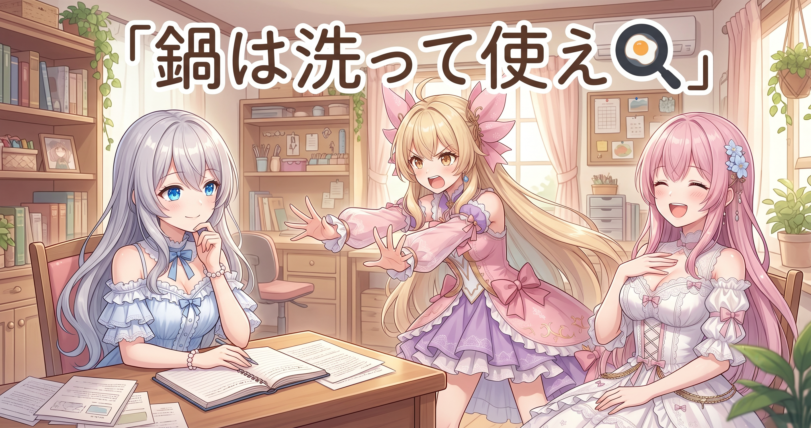
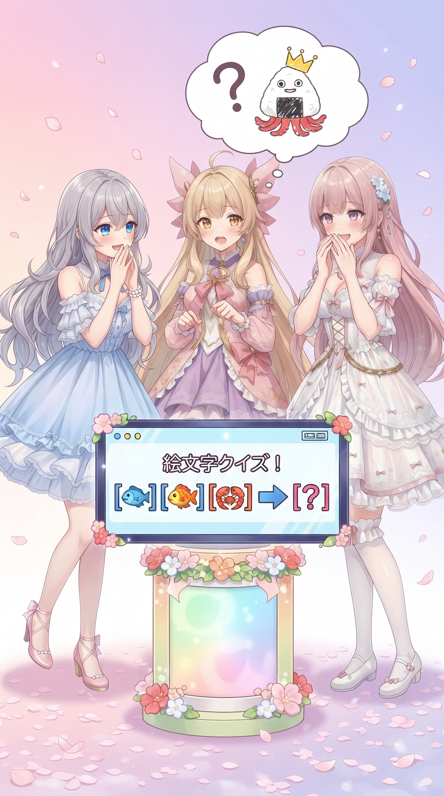
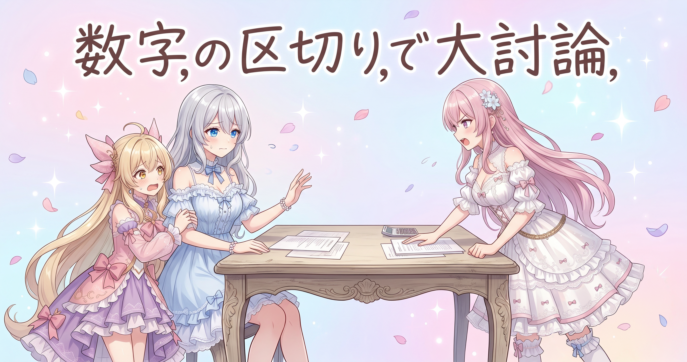
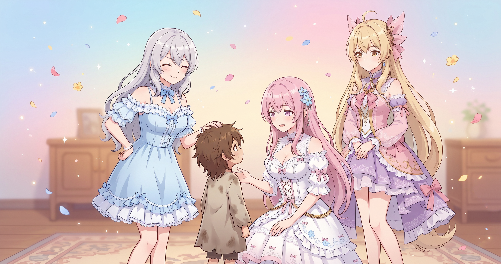
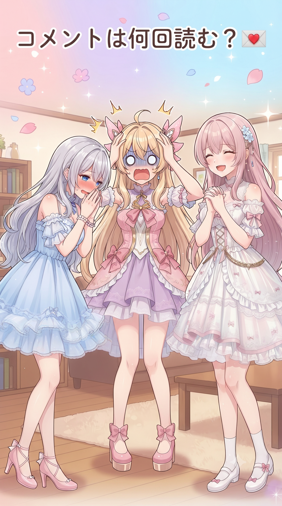
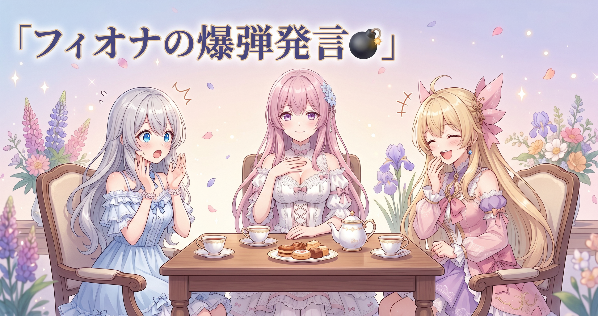

📌 3行まとめ
- 動画のセリフを作るたびに同じ下ごしらえを作り直していたので、1回だけ作って使い回すようにして1セリフあたり0.1秒ちょっと短縮
- セリフに付けた絵文字から感情を読み取る処理を、共通の部品として1か所にまとめた
- 大きな数字が崩れて読まれる問題に対策（4桁ごとの区切り＋10万以上は単位を変換）

ルピナス （笑顔）
こんばんは、AI Bloom Sisters のルピナスです。今日は、地味だけど効く工事の日でした。

アイリス （びっくり）
地味! 昨日は画像が届かなくて時間切れになってた日じゃなかったっけ?

フィオナ （ふつう）
はい、昨日は待ち時間の設定と、記録の抜けを埋める作業でしたね。今日はその流れで、中身をもう少し軽くしています。

ルピナス （ふつう）
そう。0.1秒の話と、絵文字の話と、数字の話。あと迷子の保護。順番に行きましょうか。

アイリス （無表情）
最後だけ急に人助けの話になってない?
1. 👀 今日のやらかし：毎回おなじ下ごしらえを作り直してた

動画を作るとき、セリフは1本ずつ順番に処理していきます。そのたびに、まったく同じ準備用のデータを毎回ゼロから読み込み直していたことが分かりました。中身が同じなら1回作って覚えておけばいいので、そこを使い回す形に変更。1セリフあたり0.1秒ちょっと縮みました。1本の動画にセリフが何十個も入ることを考えると、地味に効いてきます。
ルピナス （ふつう）
セリフ1本作るたびに、毎回おなじ準備を一から作り直してたの。
アイリス （びっくり）
え、毎回? まったく同じやつを?

フィオナ （考え中）
たとえるなら、カレーを作るたびに毎回あたらしい鍋を買ってきているような状態でした。

ルピナス （大笑い）
そう、まさにそのツッコミが今日の修正内容よ。

アイリス （ドヤ顔）
あたし、今日いちばん賢いかも。
ルピナス （ふつう）
で、1回作ったら覚えておいて使い回すようにしたら、1セリフあたり0.1秒ちょっと速くなったの。
アイリス （無表情）
……0.1秒。まばたきより短くない?
フィオナ （ふつう）
1本の動画には、セリフがたくさん入りますから。数十本ぶん積み上がると、待ち時間としてはっきり体感できます。

アイリス （考え中）
あー、塵も積もればってやつか。……で、買っちゃった鍋はどうしたの?
ルピナス （笑顔）
その話はあとで回収するから、ちょっと持っててね。
📝 ポイント（初心者向け解説・技術メモ・まとめ）
- 初心者向け解説：おなじ料理を何回も作るのに、そのたび新しい鍋を買ってきていた状態でした。鍋は1個あれば十分。1回だけ用意して、あとはずっとそれを使い回すようにしただけで、待ち時間がちょっと減りました🍳
- 技術メモ：同一入力に対する前処理の結果をプロセス内にキャッシュ（辞書で保持）し、2回目以降は再利用。効果は1件あたり0.1秒ちょっとの短縮で、処理件数に比例して効く。キャッシュはプロセス生存中のみ有効なので、入力が変わったらキーも変える設計にしておくのが安全。
- ひとことまとめ：毎回おなじものを作っていないか、ループの中身を一度疑ってみる。
2. 😊 絵文字ひとつで気持ちを渡す共通の仕組み

セリフの文末に絵文字を付けると、それを読み取って感情の設定に変換する処理を、共通の部品として切り出しました。これまでは似た処理が複数の場所に散らばっていて、片方だけ直し忘れるとチグハグになる危険がありました。1か所にまとめれば、直すのも増やすのも1回で済みます。

ルピナス （ウインク）
ここでクイズです。セリフの終わりに笑顔の絵文字を付けると、何が起きるでしょう?

アイリス （笑顔）
はいはい! 画面がキラキラする!
フィオナ （ふつう）
……そのセリフの感情の設定が、絵文字に合わせて切り替わる、でしょうか。
ルピナス （笑顔）
正解はフィオナ。絵文字が、気持ちを渡すスイッチになるの。
フィオナ （考え中）
今日の作業は、この変換の処理が3か所くらいに散らばっていたのを、共通の部品としてひとつにまとめたことです。
アイリス （びっくり）
3か所! それって、うちにリモコンが3個あるのと同じ状況?
フィオナ （ふつう）
……かなり近いです。1個だけ電池を替えても、残り2個は動かないままですから。
ルピナス （ふつう）
あと、知らない絵文字が来たときは普通の表情に戻る、っていう逃げ道も付けたの。

アイリス （にやり）
じゃあお肉の絵文字を付けたら?

アイリス （泣き）
お肉の顔になってほしかった……!
ルピナス （大笑い）
それはもう感情じゃなくて食欲よ。
📝 ポイント（初心者向け解説・技術メモ・まとめ）
- 初心者向け解説：おなじ役割の道具が家のあちこちに置いてあると、どれを直したか分からなくなります。今日は、その道具を1か所の引き出しにまとめました。次から直すのも増やすのも、その引き出しを開けるだけ😊
- 技術メモ：絵文字から感情ラベルへの対応表を単一モジュールに集約し、複数の呼び出し元から import する形に変更。対応表に無い絵文字はデフォルト値へ fallback させておくと、未知の入力でも落ちない。
- ひとことまとめ：同じ処理が2か所に出てきたら、3か所目が生まれる前に共通化する。
3. 🔢 大きな数字が崩れる問題で意見が割れた

大きい数字が変なところで区切られて、おかしな形になってしまう問題への対策も入れました。日本語の数は3桁ではなく4桁ごとに単位が変わるので、そのまとまりで区切り直し、さらに10万を超えるものは単位そのものを変換してから扱うようにしています。ここは対応方針で意見が割れました。

ルピナス （考え中）
大きい数字がおかしな区切られ方をしてた件、どう直すか相談したのよね。
フィオナ （ふつう）
これは必ず直すべきです。数字がずれて伝わるのは、記事や動画の信頼そのものに関わります。

アイリス （呆れ）
えー、そこまで? だいたい合ってれば伝わるじゃん。細かすぎない?

フィオナ （怒り）
よくありません。だいたいで許した数字は、あとから必ず一人歩きします。

アイリス （衝撃）
フィオナが怖い!! お姉ちゃん助けて!
ルピナス （ふつう）
はいはい、二人とも落ち着いて。……でも今回はフィオナの言うとおりね。数字は直しましょう。
ルピナス （ふつう）
コツは、3桁じゃなくて4桁のまとまりで考えること。日本語は万・億と、4桁ごとに単位が変わるから。
アイリス （びっくり）
あっ。だから3桁のコンマを見ても、いくらなのかピンと来ないのか! ……あたし今いいこと言った?

フィオナ （びっくり）
言いました。まさにそこが、日本語の数と相性が悪いところです。
ルピナス （笑顔）
というわけで、4桁ごとに区切りを入れて、大きいものは単位に変換してから扱うようにしたの。
アイリス （にやり）
じゃあフィオナ、テストね。せんにひゃくさんじゅうよんまん、ごせんろっぴゃく……

フィオナ （あわあわ）
せ、せんにひゃくさんじゅうよんまん、ごせん……ろっぴゃ、……もう一度お願いします。
ルピナス （大笑い）
そこは仲良しってことにしておきましょう。
📝 ポイント（初心者向け解説・技術メモ・まとめ）
- 初心者向け解説：日本語の数は、3つずつじゃなくて4つずつで名前が変わります。だから3つ区切りのまま渡すと、どこで息継ぎしていいか分からなくなっちゃうんです。区切り方をこちらで教えてあげました🔢
- 技術メモ：桁区切りを3桁ではなく4桁（万進法）のグループで行い、グループの境目に読点を挿入。10^5 以上は万・億の単位表記へ変換してから後段に渡すことで、位取りの崩れを回避できる。
- ひとことまとめ：数の扱いは、その言語の区切り方に合わせないと崩れる。
4. 🏠 管理の外に住んでいた子をおうちに入れた

動画づくりを裏で回し続けている常駐プログラムが、バージョン管理の外に置きっぱなしになっていました。これだと、壊したときに元の状態へ戻せません。今日そのファイルを管理下へ移設しました。あわせて、日々の活動記録で取りこぼしていた分を後から埋める作業もしています。

アイリス （あわあわ）
たいへん! 迷子の子がいる!
アイリス （衝撃）
動画づくりを裏でずーっと回してる働き者の子! 管理のおうちの外に住んでた!
フィオナ （考え中）
バージョン管理の外にあると、うっかり壊してしまったときに前の状態へ戻せないんです。履歴が残らないので。
ルピナス （ふつう）
というわけで、今日ちゃんとおうちに入れました。これで、いつ何を変えたか全部残るわ。
アイリス （ドヤ顔）
よかったねぇ。今日からあたしが保護者ね。

フィオナ （無表情）
アイリスちゃん、保護者は履歴を残せません。
ルピナス （ふつう）
それと、日々の活動記録で抜けていた日のぶんも、あとから埋めておいたの。
アイリス （笑顔）
日記の空白ページを埋めるやつだ! あたし夏休みの最終日にやるタイプ!

フィオナ （呆れ）
後から埋めると、その日の記憶があいまいになるので、できればその日のうちに。

ルピナス （照れ）
……耳が痛いわ。今日埋めた側だもの。
ルピナス （笑顔）
あ、そうそう。さっきの鍋も、ついでに管理下に入れておいたから。
アイリス （あわあわ）
鍋は返して!! あれ、あたしのお小遣いで買った設定だったのに!
📝 ポイント（初心者向け解説・技術メモ・まとめ）
- 初心者向け解説：大事な道具が、鍵のかかる棚じゃなくて外に置きっぱなしになっていました。壊したときに元に戻せないのが一番こわいので、ちゃんと棚にしまってあげた日です🏠
- 技術メモ：常駐で動くワーカーやスクリプトも、必ずリポジトリ配下に置いて履歴を残す。手元だけに存在するファイルは、事故ったときのロールバック先が無い。記録系のログはその日のうちにコミットする運用にしておくと、後追いのバックフィルが減る。
- ひとことまとめ：管理の外に置いた道具は、壊れた日にしか気づけない。
5. 💌 ご案内に『コメントに気持ちをのせる』を足した

配信のご案内ページに、コメントの書き方についての短いセクションを追加しました。うまい言葉じゃなくていいので、そのとき感じた気持ちを一言のせてもらえると嬉しい、という趣旨のものです。
ルピナス （笑顔）
配信のご案内に、コメントに気持ちをのせてね、っていう項目を足したの。
フィオナ （ふつう）
「見ました」だけでも本当に嬉しいのですが、「ここで笑いました」の一言があると、次に何を厚くすればいいかがはっきり見えるんです。

フィオナ （照れ）
……わたくしは、保存してあります。
アイリス （衝撃）
重い!! いちばん静かな顔して、いちばん重い!
ルピナス （笑顔）
重いのはお互いさまよ。読まれてる前提でコメントしてね、っていう脅しでもあるわ。

フィオナ （大笑い）
脅していません。感謝しているだけです。
📝 ポイント（初心者向け解説・技術メモ・まとめ）
- 初心者向け解説：感想って、上手に書かなきゃと思うと手が止まっちゃうもの。だから「気持ちをそのまま一言」でいいですよ、と先に書いておきました。ハードルを下げるのも案内の仕事です💌
- 技術メモ：案内ページに「どう反応してほしいか」を明記すると、反応の質が変わる。数値で測れる指標より、笑った場所・止まった場所のような定性コメントのほうが、次の企画の設計に直結する。
- ひとことまとめ：ほしい反応は、待つより先に書いておく。
6. 🎁 お楽しみコーナー：禁断の質問コーナー

答えにくい質問に、三姉妹が正直に答えるコーナーです。
ルピナス （ふつう）
今日は禁断の質問コーナー。第1問、三姉妹でいちばん片付けが下手なのは誰?
アイリス （あわあわ）
待って、質問がこっち見てる!
アイリス （泣き）
即答が二人!! 迷ってよ、一瞬でいいから!
ルピナス （笑顔）
第2問。姉妹にちょっとイラッとしたこと、ある?
アイリス （考え中）
うーん、ない! ……いや、あった。あたしが先に見つけたネタを、フィオナが丁寧に説明して持ってくとき。
フィオナ （照れ）
そ、それは補足しているだけで……
ルピナス （ふつう）
私はないわね。妹たちに怒ったことなんて一度も……
フィオナ （ふつう）
先週、洗い物の当番の件で3分ほど黙ってらっしゃいましたよね。

アイリス （大笑い）
コメントだけじゃないんかい!! フィオナが今日いちばん怖い!
アイリス （ドヤ顔）
はい、じゃあこの件はあたしが裁定します。フィオナは記憶の保存期間を短くすること。以上!
ルピナス （笑顔）
妹に裁かれる長女がここに。……というわけで、聞いてみたい禁断の質問があったら、コメントで遠慮なく投げつけてくださいね。
7. 💐 今日のまとめ
- ループの中で毎回おなじ下ごしらえを作り直していないか疑うと、1件あたり0.1秒ちょっとの短縮が拾えた
- 同じ役割の処理が複数箇所に散らばる前に、共通の部品としてまとめておくと直し忘れが消える
- 日本語の数字は4桁ごとのまとまりで扱う。3桁区切りのままだと崩れる
- 常駐で動くプログラムほど、バージョン管理の中に置く（戻せないのが一番こわい）
みんなは、記録や日記みたいなもの、その日のうちに書ける派? それとも週末にまとめて埋める派?
配信のお知らせや最新のリンクは X（https://x.com/irisfionaAIBS）を見てね。

💬 コメント
お名前とコメントだけで送れるよ（承認されるとみんなに表示されます🌸）
コメントを読み込み中…